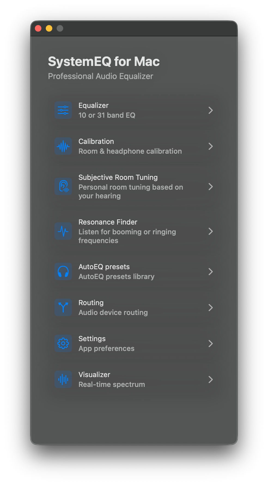
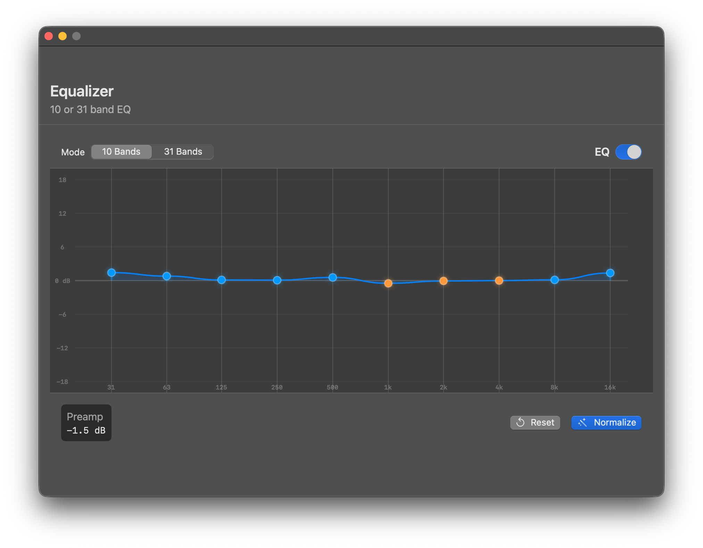
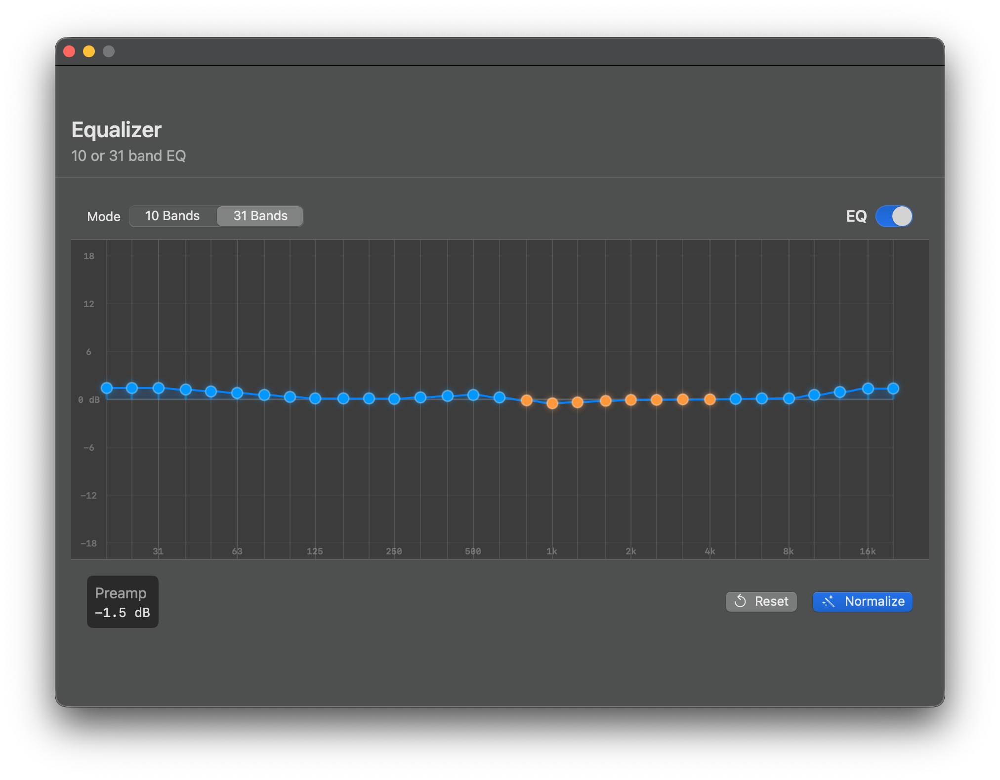
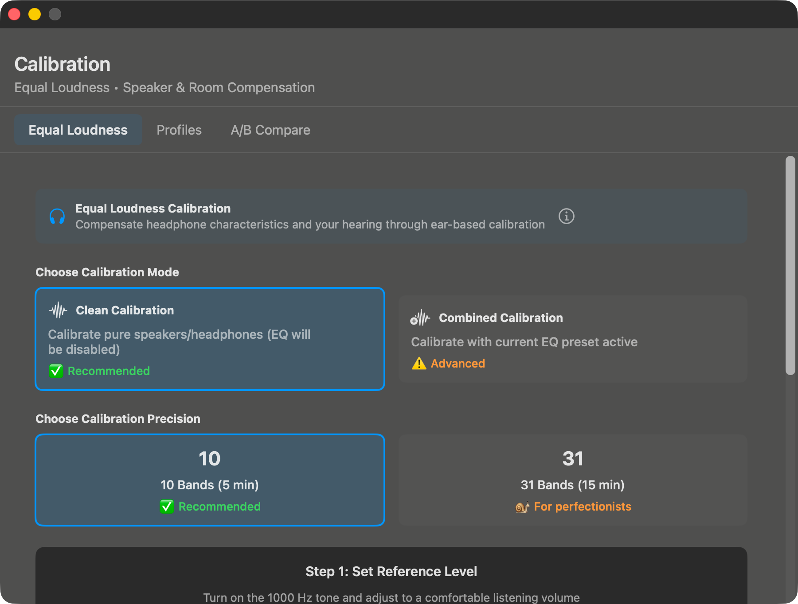
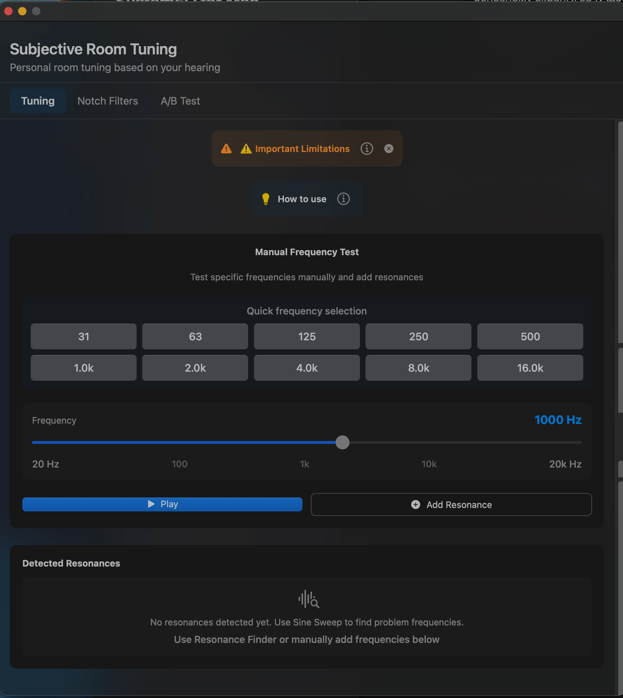
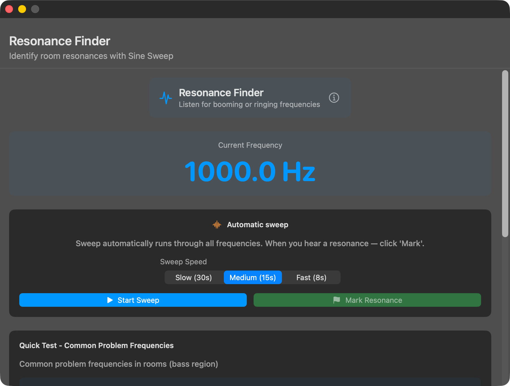
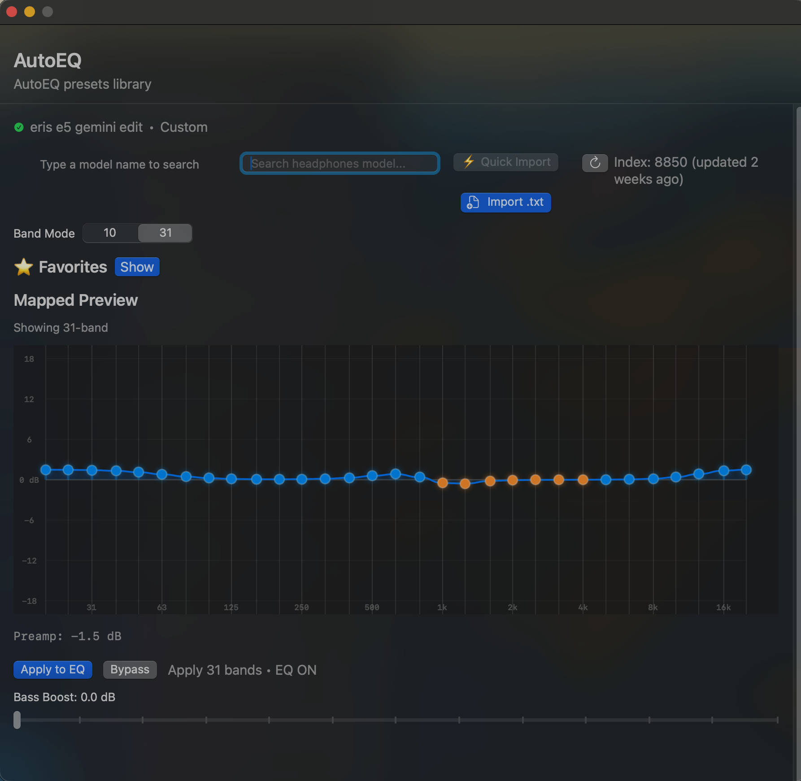
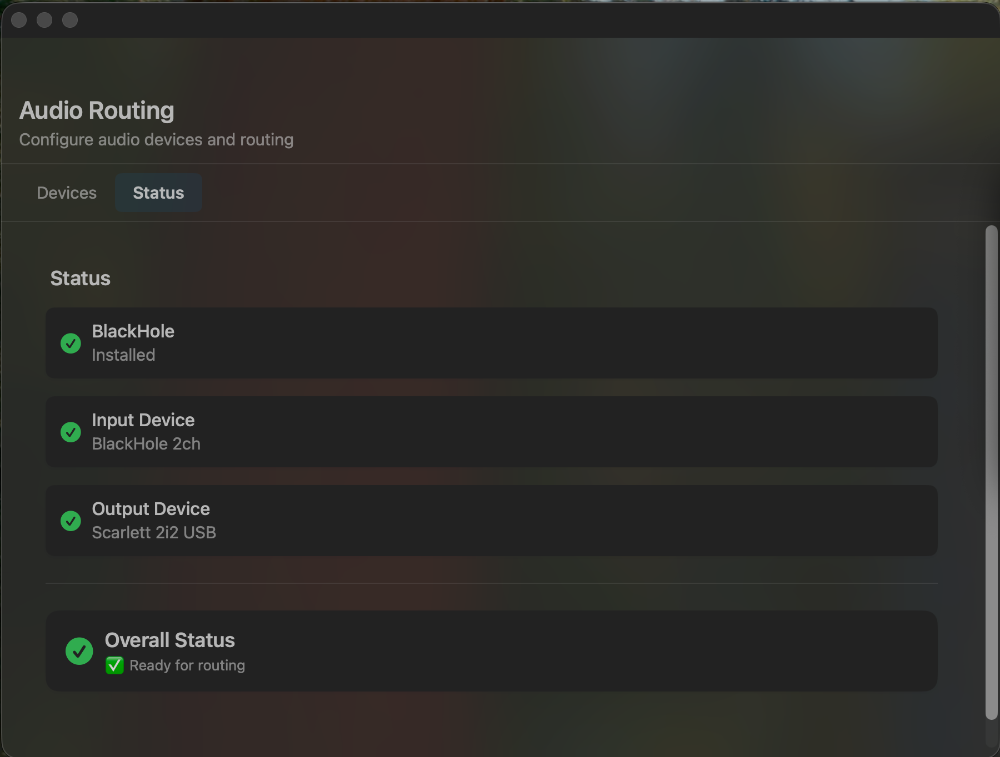
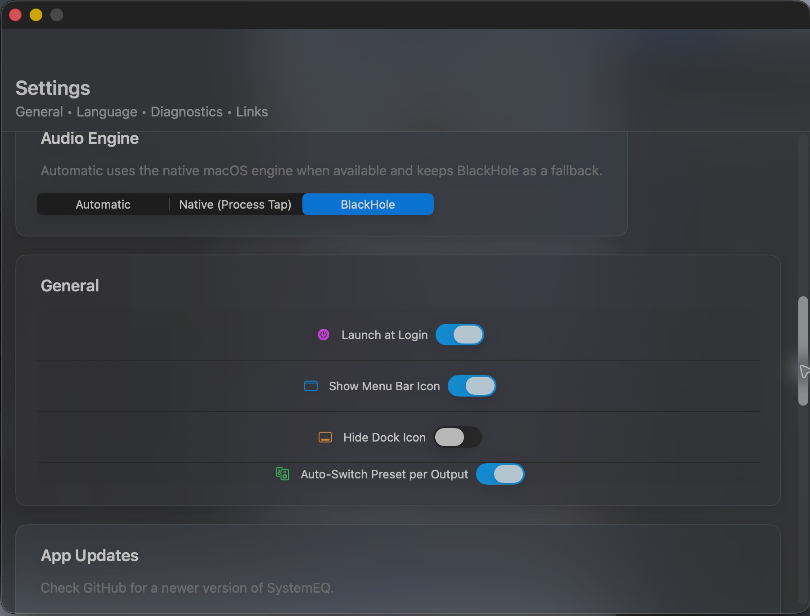
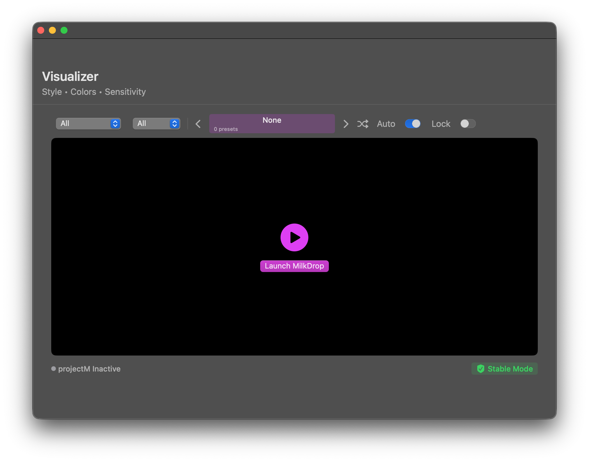

A system-wide parametric equalizer with calibration tools, AutoEQ presets, room tuning and a live MilkDrop visualizer — all running natively on your Mac.

More than an equalizer — a complete audio shaping suite for macOS.
Switch between simple 10-band or precision 31-band parametric equalizer. vDSP-accelerated biquad filters for low-latency processing.
Built-in SQLite database with presets for thousands of headphones from the AutoEQ project. Import any .txt preset file.
Compensate for your headphones and your hearing through interactive ear-based calibration. Clean or combined modes, 10 or 31-band precision.
Personal room tuning based on your hearing. Test specific frequencies manually and add notch filters for problem resonances.
Automatic sine sweep to identify booming or ringing frequencies in your room or headphones. Mark and tame them with one click.
Pick any input/output device. Live audio level meters, test tone generator, and one-click EQ enable/disable.
Built-in ProjectM/MilkDrop visualizer reacts to your audio in real time. Lock or shuffle presets.
Native CoreAudio (AUHAL) dual-I/O engine with lock-free ring buffers. Optimized for real-time audio.
Full interface localization in English, Italian and Ukrainian. Switch language on the fly.
macOS doesn't expose a system-wide audio EQ — so SystemEQ uses the BlackHole virtual driver to route, process and output your audio.
All app audio (Spotify, Safari, system sounds) flows into BlackHole 2ch.
The app reads audio from BlackHole using a native CoreAudio AUHAL input.
Your EQ curve is applied in real time via vDSP-accelerated biquad cascades.
Processed audio is sent to your physical output — speakers, headphones, DAC.
Tap any tile to enlarge. The visualizer plays with sound when expanded.









SystemEQ is distributed as a free open-source build outside the App Store.
The virtual audio driver SystemEQ uses to capture system audio.
brew install blackhole-2chGrab the latest .dmg from GitHub Releases and drag the app to /Applications.
macOS will block the app because it isn't notarized. Right-click the app in /Applications → Open, or remove the quarantine flag:
xattr -dr com.apple.quarantine "/Applications/SystemEQ for Mac.app"In System Settings → Sound → Output, choose BlackHole 2ch. Then in SystemEQ, select your real output device (speakers, headphones, DAC).
Open the Xcode project on macOS with Xcode 16.2+ and build for your local Mac.
SystemEQ is free forever. If it makes your audio better, consider supporting development — completely optional.